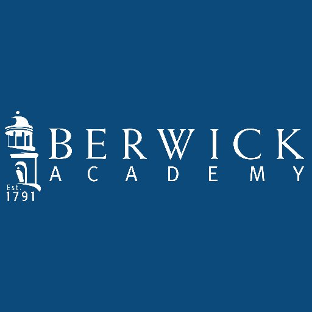

Roger Williams University
Bristol, RI · 2023–2027
B.S. Computer Science & Cyber Security
Minors in Mathematics & Data Science
- Dean's List — (2024–2026)
- Academic Excellence Award — (2024–2026)
- Class Council Treasurer
- Resident Assistant
WPP / Portfolio / Rev. 01
Computer Science & Cyber Security student at Roger Williams University. I work in IT operations, security, and software development.
I'm a senior at Roger Williams University studying computer science and cyber security, minoring in mathematics and data science. I'm passionate about software development, cyber security, and automation.
Outside of school and work I'm an avid sailor, amateur CAD designer, and try to get outdoors away from a screen whenever I can.
Loading work history…
Loading skills…
Dean's ListRoger Williams University
Academic ExcellenceRoger Williams University
Math Dept. RecognitionBerwick Academy
Student Hackathon LeaderBerwick Academy
Bristol, RI · 2023–2027
B.S. Computer Science & Cyber Security
Minors in Mathematics & Data Science

South Berwick, ME · 2018–2023
Diploma High School
Open to full-time roles, internships, and interesting conversations. Email is the fastest way to reach me, LinkedIn works too. References available upon request.